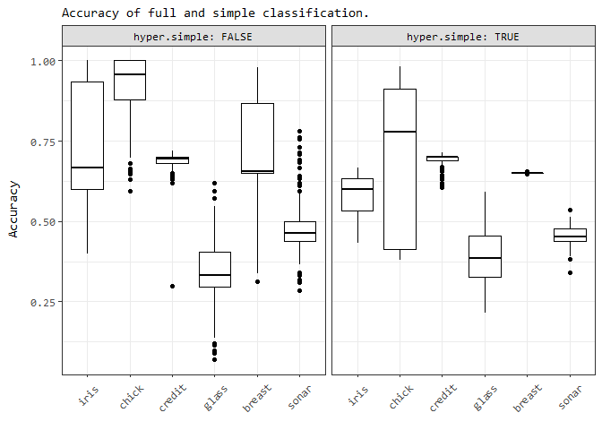

Hyperparameter Evaluation
Sebastian Hönel
2020-03-10
Hyperparameter-Evaluation.rmdThis vignette only embeds a rendered version of another
Rnotebook, that evaluates the effect of hyperparameters of all functions used for inferencing in the packagemmb. It should be displayed right below this paragraph. If you have trouble viewing it, check out the latest version on Github: Hyperparameter Evaluation. Additional formats are available here: Additional Formats.
Functions implemented in mmb support some hyperparameters. This notebook evaluates them and compares performance to other well-known methods, using some well-known methods. The results of this notebook are included in the vignette Hyperparameter Evaluation. Since this is a rather substantial analysis, it cannot be a vignette itself, and is built externally.
Grid search
In the first section, we are evaluating our new classifier and regressor for some well known datasets, using a grid-search approach and caret. We start with classification, then continue with regression. Those best parameters will then be used in further comparisons against other models.
In the following block, we can globally disable attempts to compute results. If the resulting files are present, then the related evaluations are skipped anyway. However, setting the following to FALSE, will prevent the actual attempt.
DISABLE_COMPUTATIONS <- TRUELet’s first install all the needed packages:
First, define the models we want to test:
# Used by both regression and classification!
caret_models <- c(
"null", "bayesCaret", "ranger", "gbm", "mlpML", "bayesglm")
# This is extra models used for classification/regression resp.:
caret_models_c <- c(caret_models,
"pam", "naive_bayes", "C5.0", "rda")
caret_models_r <- c(caret_models,
"knn", "pcr", "kernelpls", "rpart2")We define a couple of helper-functions:
# We will truncate all datasets to this amount if larger using
# appropriate resampling!
max_rows_dataset <- 2000
#' Unifies the way we retrieve a dataset. Already splits the dataset
#' into training- and validation partitions. The split is 0.7, if the
#' amount of rows is less than 800; 0.85, otherwise.
#' @param name a short-cut name of the dataset to obtain, e.g. "iris"
#' @param seedMult an integer used for \code{set.seed()}
#' @param useDs an optional data.frame of a 3rd party dataset. Use this
#' to use your own dataset but still obtain a list as produced by this
#' function.
#' @param useLabel character the name of the label to use when passing
#' in an own dataset using 'useDs'.
#' @return list with the entries 'ds' (the entire dataset as data.frame),
#' 'label' (name of column to be the label/target), 'train' and 'valid'
#' (data.frames with training and validation data; train+valid = ds)
get_dataset <- function(name, seedMult, useDs = NULL, useLabel = NULL) {
set.seed((0xceed * seedMult * max_rows_dataset) %% .Machine$integer.max)
ds <- NULL
dsLabel <- "Class"
if (name == "chick") {
data("ChickWeight")
ds <- data.frame(ChickWeight)
dsLabel <- "Diet"
} else if (name == "iris") {
data("iris")
ds <- iris
dsLabel <- "Species"
} else if (name == "credit") {
data("GermanCredit")
ds <- data.frame(GermanCredit)[, 1:10]
} else if (name == "glass") {
data("Glass")
ds <- data.frame(Glass)
dsLabel <- "Type"
} else if (name == "breast") {
data("BreastCancer")
ds <- data.frame(BreastCancer)
ds$Id <- NULL
ds$Cl.thickness <- as.integer(ds$Cl.thickness)
ds$Cell.size <- as.integer(ds$Cell.size)
ds$Cell.shape <- as.integer(ds$Cell.shape)
ds$Marg.adhesion <- as.integer(ds$Marg.adhesion)
ds$Epith.c.size <- as.integer(ds$Epith.c.size)
ds$Bare.nuclei <- as.integer(ds$Bare.nuclei)
ds$Bl.cromatin <- as.integer(ds$Bl.cromatin)
ds$Normal.nucleoli <- as.integer(ds$Normal.nucleoli)
ds$Mitoses <- as.integer(ds$Mitoses)
} else if (name == "sonar") {
data("Sonar")
ds <- data.frame(Sonar)
} else if (name == "vowel") {
data("Vowel")
ds <- data.frame(Vowel)
ds$V1 <- as.integer(ds$V1)
} else if (name == "iono") {
data("Ionosphere")
ds <- data.frame(Ionosphere)
ds$V1 <- as.integer(ds$V1)
ds$V2 <- NULL
} else if (name == "vehicle") {
data("Vehicle")
ds <- data.frame(Vehicle)
} else if (name == "letter") {
data("LetterRecognition")
ds <- data.frame(LetterRecognition)
dsLabel <- "lettr"
} else if (name == "satellite") {
data("Satellite")
ds <- data.frame(Satellite)
dsLabel <- "classes"
} else if (name == "segment") {
data("segmentationData")
ds <- data.frame(segmentationData)
ds$Cell <- NULL
ds$Case <- as.integer(ds$Case)
}
# Below regression-datasets!
# 'label'/'dsLabel' is the target regression column!
else if (name == "diamonds") {
data("diamonds")
ds <- data.frame(diamonds)
dsLabel <- "price"
ds$cut <- as.integer(ds$cut)
ds$color <- as.integer(ds$color)
ds$clarity <- as.integer(ds$clarity)
} else if (name == "sacramento") {
data("Sacramento")
ds <- data.frame(Sacramento)
dsLabel <- "price"
ds$zip <- NULL
ds$city <- as.character(ds$city)
ds$type <- as.character(ds$type)
} else if (name == "boston") {
data("BostonHousing")
ds <- data.frame(BostonHousing)
dsLabel <- "ptratio"
ds$chas <- as.character(ds$chas)
} else if (name == "midwest") {
data("midwest")
ds <- data.frame(midwest)
dsLabel <- "percwhite"
ds$PID <- NULL
ds$county <- NULL
ds$category <- NULL
} else if (name == "seals") {
data("seals")
ds <- data.frame(seals)
dsLabel <- "delta_long"
} else if (name == "txhousing") {
data("txhousing")
ds <- data.frame(txhousing)
dsLabel <- "sales"
} else if (name == "mortality") {
data("USRegionalMortality")
ds <- data.frame(USRegionalMortality)
dsLabel <- "Rate"
ds$Region <- as.character(ds$Region)
ds$Status <- as.character(ds$Status)
ds$Sex <- as.character(ds$Sex)
ds$Cause <- as.character(ds$Cause)
} else if (name == "singer") {
data("singer")
ds <- data.frame(singer)
dsLabel <- "height"
ds$voice.part <- as.character(ds$voice.part)
} else if (name == "pima") {
data("PimaIndiansDiabetes")
ds <- data.frame(PimaIndiansDiabetes)
dsLabel <- "age"
ds$diabetes <- as.character(ds$diabetes)
} else if (name == "ozone") {
data("Ozone")
ds <- data.frame(Ozone)
dsLabel <- "V11"
ds$V9 <- NULL # too many NAs
ds$V1 <- as.integer(ds$V1)
ds$V2 <- as.integer(ds$V2)
ds$V3 <- as.integer(ds$V3)
} else if (name == "faithful") {
data("faithfuld")
ds <- data.frame(faithfuld)
dsLabel <- "density"
}
# Below non-datasets
else if (is.data.frame(useDs)) {
ds <- useDs
dsLabel <- useLabel
} else {
stop(paste("Dataset is not known:", name))
}
# Only take complete rows!
ds <- ds[complete.cases(ds), ]
if (nrow(ds) > max_rows_dataset) {
tempPart <- createDataPartition(
ds[[dsLabel]], p = max_rows_dataset / nrow(ds), list = F)
ds <- ds[tempPart, ]
}
part <- createDataPartition(
ds[[dsLabel]], p = ifelse(nrow(ds) < 800, 0.7, 0.85), list = F)
return(list(
ds = ds,
label = dsLabel,
train = ds[part, ],
valid = ds[-part, ]
))
}
#' Uses caret's 'bestTune', i.e., the best found hyperparameters from the
#' grid-search, and extracts the results from each fold/repeat that uses
#' these. The result is a table with the results obtained using the best
#' set of hyperparameters.
#' @param resample data.frame as obtained from a fitted model trained
#' with caret (model$resample). This should ideally be obtained using a
#' train-configuration where resample="all".
#' @param bestTune data.frame as obtained from a fitted model trained
#' with caret (model$bestTune).
#' @return data.frame a subset of 'resample', where the rows use the hyper-
#' parameters from 'bestTune'.
aggregate_caret_results <- function(resample, bestTune) {
conds <- c()
for (cName in colnames(bestTune)) {
bt <- bestTune[[cName]]
cond <- NULL
if (is.na(bt) || is.nan(bt)) {
n <- if (is.nan(bt)) "n" else ""
cond <- paste(
"is.na", n, "(resample$", cName, ")", sep = "")
} else if (is.numeric(bt) && (bt[1] %% 1 != 0)) {
cond <- paste(
"(abs(resample$", cName, " - ", "bestTune$", cName, ") < 1e-15)", sep = "")
} else if (is.character(bt) || is.factor(bt)) {
cond <- paste(
"resample$", cName, " == ",
paste('"', bestTune[[cName]], '"', sep = ""),
sep = ""
)
} else {
cond <- paste(
"resample$", cName, " == ", "bestTune$", cName, sep = "")
}
conds <- c(conds, cond)
}
return(resample[eval(parse(text = paste(conds, collapse = " & "))), ])
}
#' Returns a list of seeds used in parallel training with caret. For
#' repeatability, we need deterministic seeds. The amount depends on
#' the amounts of hyperparamenters, and number of folds/repeats.
#' @param nh integer, the number of hyperparameters
#' @param amount integer, the number of seeds, usually this is number
#' of folds * number of repeats.
#' @param seed integer used in \code{set.seed()}. Given an identical
#' seed, this function produces the same seeds (idempotent).
#' @return list with seeds that can be used in caret's trainControl
get_seeds <- function(nh, amount, seed = 42) {
set.seed(seed)
seeds <- vector(mode = "list", length = amount + 1)
for(i in 1:amount) seeds[[i]] <- sample.int(.Machine$integer.max, nh)
# For the last model:
seeds[[amount + 1]] <- sample.int(.Machine$integer.max, 1)
return(seeds)
}Let’s define a function to perform grid search.
#' modelsAndDatasets is a data.frame with columns 'model' and 'dataset'.
#' It should already match each model with the right dataset, i.e., it
#' should not have a row {nb,diamonds}, as Naive Bayes cannot regress.
#' This function does not return anything, but stores the result of each
#' model/dataset combination as CSV.
#' @param modelsAndDatasets data.frame, with the columns 'model' and
#' 'dataset'. Model needs to be acceptable for caret, and dataset needs
#' to be acceptable by @seealso \code{get_dataset()}.
#' @return void
get_other_models_results <- function(modelsAndDatasets = data.frame()) {
if (DISABLE_COMPUTATIONS) {
return(0)
}
perms <- modelsAndDatasets[order(modelsAndDatasets$model, modelsAndDatasets$dataset), ]
set.seed(0xbeef42)
perms <- perms[sample(rownames(perms)), ]
numCores <- parallel::detectCores()
numCoresNested <- if (nrow(perms) < numCores) numCores else max(2, numCores / 4)
cl <- parallel::makeCluster(max(2, numCores / 2), outfile = "")
clusterExport(cl, as.list(names(.GlobalEnv)))
registerDoSNOW(cl)
pb <- txtProgressBar(min = 0, max = nrow(perms), style = 3)
caretModelResultsList <- foreach(
permRowIdx = rownames(perms),
.packages = c(packages_required),
.options.snow = list(
progress = function(n) {
writeLines(paste(n, Sys.time(), sep = " -- "), con = "progress.txt")
setTxtProgressBar(pb, n)
}
)
) %dopar% {
idx <- as.numeric(permRowIdx)
permRow <- perms[permRowIdx, ]
dsList <- get_dataset(permRow$dataset, seedMult = 1337 * idx)
trP <- nrow(dsList$train) / nrow(dsList$ds)
isRegress <- is.numeric(dsList$ds[, dsList$label])
typeShort <- if (isRegress) "r" else "c"
isMMB <- length(grep("bayesCaret", permRow$model)) > 0
dataName <- paste("results_", typeShort, "/", permRow$model, "_", permRow$dataset, "_", typeShort, ".csv", sep = "")
if (file.exists(dataName)) {
return(read.csv(dataName))
}
# Workaround: The models mlpML, pam, rda do not support ordered factors
# in the chick dataset and will fail, but we can convert them to numeric.
if (permRow$model %in% c("mlpML", "pam", "rda") && permRow$dataset == "chick") {
dsList$ds$Chick <- as.numeric(dsList$ds$Chick)
dsList$train$Chick <- as.numeric(dsList$train$Chick)
dsList$valid$Chick <- as.numeric(dsList$valid$Chick)
}
x <- dsList$ds[, !(colnames(dsList$ds) %in% c(dsList$label))]
y <- dsList$ds[, dsList$label]
rcvNumber <- 5
rcvRepeats <- 3
trMethod <- "repeatedcv"
tuneLength <- ifelse(trMethod == "none", 1, 3)
numHypers <- nrow(if (isMMB) mmb::bayesCaret$grid(x = x, y = y) else caret::getModelInfo(
permRow$model)[[1]]$grid(len = tuneLength, x = x, y = y))
set.seed(idx * 23)
trControl <- caret::trainControl(
method = trMethod, number = rcvNumber, repeats = rcvRepeats,
p = trP, savePredictions = "all", returnResamp = "all",
seeds = get_seeds(numHypers, rcvNumber * rcvRepeats, seed = idx * 23))
clNested <- makePSOCKcluster(numCoresNested)
registerDoParallel(clNested)
set.seed(idx * 371)
timeStart <- proc.time()[["elapsed"]]
modelName <- as.character(permRow$model)
modelObj <- if (isMMB) mmb::bayesCaret else modelName
model <- caret::train(x = x, y = y, method = modelObj, trControl = trControl)
timeEnd <- proc.time()[["elapsed"]]
stopCluster(clNested)
# Now we store 2 things:
# - The full resample
# - The aggregated resample (those matching bestTune)
dataFull <- model$resample
dataFull$Model <- permRow$model
dataFull$Dataset <- permRow$dataset
dataFull$Runtime <- (timeEnd - timeStart) / (rcvNumber * rcvRepeats)
# Now the aggregated:
dataAgg <- aggregate_caret_results(dataFull, model$bestTune)
# Rename some columns and write files:
for (cn in colnames(model$bestTune)) {
dataFull[[paste("hyper.", cn, sep = "")]] <- dataFull[[cn]]
if (!(cn %in% c("Model", "Dataset", "Runtime"))) {
dataFull[[cn]] <- NULL # delete renamed column
}
dataAgg[[paste("hyper.", cn, sep = "")]] <- dataAgg[[cn]]
if (!(cn %in% c("Model", "Dataset", "Runtime"))) {
dataAgg[[cn]] <- NULL
}
}
dataName <- paste("results_", typeShort, "/", permRow$model, "_", permRow$dataset, "_", typeShort, ".csv", sep = "")
utils::write.csv(dataFull, dataName)
dataName <- paste("results_", typeShort, "/", permRow$model, "_", permRow$dataset, "_", typeShort, "_agg.csv", sep = "")
utils::write.csv(dataAgg, dataName)
return(dataFull)
}
stopCluster(cl)
registerDoSEQ()
}Classification
Here, we use the full grid as provided by bayesCaret. Please note that the grid and its size depends on whether we are doing classification or not.
datasets_c <- c("iris", "chick", "credit", "glass", "breast", "sonar")
modelAndData_c <- expand.grid(
model = caret_models_c,
dataset = datasets_c,
stringsAsFactors = FALSE)
get_other_models_results(modelAndData_c)
## [1] 0Regression
# We set a new default regressor, to avoid NaN in sparse predictions.
mmb::setDefaultRegressor(function(data) {
res <- mmb::estimatePdf(data)$argmax
if (is.na(res)) {
res <- median(data)
}
return(res)
})
datasets_r <- c("mortality", "sacramento", "boston", "seals", "faithful", "diamonds")
modelAndData_r <- expand.grid(
model = caret_models_r,
dataset = datasets_r,
stringsAsFactors = FALSE)
get_other_models_results(modelAndData_r)
## [1] 0Evaluation
In this section, we will load the results and aggregate all data, so that we can then continue with visualizations and statistical analyses. We begin by first loading the results for all other models, before continuing with our Bayesian results.
install.packages_cond("extrafont")
## Registering fonts with R
if (.Platform$OS.type == "windows") {
windowsFonts(Times = windowsFont("Times"))
windowsFonts(Consolas = windowsFont("Consolas"))
}
# Was overridden by RandomForest
margin <- ggplot2::margin
#' Given a ggplot2 instance, saves the plot as EPS in the figures-directory,
#' and then returns it for further processing.
#' @param ggplotInstance a gg plot
#' @param fileName character the name of the file, without the extension.
#' @param width in inches, defaults to the width of a portrait A4 (210mm)
#' @param height in inches, defaults to 10cm (~3.93in)
#' @return ggplot the instance as given, unchanged
saveAndPlotAsEPS <- function(ggplotInstance, fileName, width = 2100/254, height = 1000/254) {
f <- "figures"
if (!dir.exists(f)) {
dir.create(f)
}
fileName <- paste(f, paste(fileName, ".eps", sep = ""), sep = "/")
ggsave(fileName, ggplotInstance,
width = floor(width * 100) / 100,
height = floor(height * 100) / 100,
limitsize = F, device = cairo_pdf)
return(ggplotInstance)
}Evaluation of the Bayes-only models
In this section, we will outline the effects of various hyperparameters in our Bayesian models.
Load and aggregate the data
We need to aggregate the results from each model, both for classification and regression.
# bc means bayesCaret, c=classification
results_bc_c <- do.call(rbind, lapply(datasets_c, function(d) {
csv <- read.csv(paste("results_c/bayesCaret_", d, "_c.csv", sep = ""))
csv$X <- NULL
csv$Model <- NULL
return(csv)
}))
(ggplot(results_bc_c, aes(x=Dataset, y=Accuracy)) +
labs(subtitle = "Accuracy of full and simple classification.") +
geom_boxplot(color="black") +
facet_wrap(hyper.simple ~ ., labeller = label_both) +
theme_bw() +
theme(
text = element_text(family="Consolas"),
axis.text.x = element_text(angle = 45, margin = margin(t=10), hjust = .66),
axis.title.x = element_blank(), strip.background = element_rect(fill="#dfdfdf"),
axis.title.y = element_text(margin = margin(r=10)),
legend.text = element_text(size = 8),
strip.text = element_text(color="black"))
) %>% saveAndPlotAsEPS("Bayes-all-datasets_Acc")
# Now let's do the same, for Kappa
(ggplot(results_bc_c, aes(x=Dataset, y=Kappa)) +
labs(subtitle = "Kappa of full and simple classification.") +
geom_boxplot(color="black") +
facet_wrap(hyper.simple ~ ., labeller = label_both) +
theme_bw() +
ylim(-.1, 1) + # For some reason, some results have a negative Kappa..
theme(
text = element_text(family="Consolas"),
axis.text.x = element_text(angle = 45, margin = margin(t=10), hjust = .66),
axis.title.x = element_blank(), strip.background = element_rect(fill="#dfdfdf"),
axis.title.y = element_text(margin = margin(r=10)),
legend.text = element_text(size = 8),
strip.text = element_text(color="black"))
) %>% saveAndPlotAsEPS("Bayes-all-datasets_Kappa")
## Warning: Removed 226 rows containing non-finite values (stat_boxplot).
## Warning: Removed 226 rows containing non-finite values (stat_boxplot).